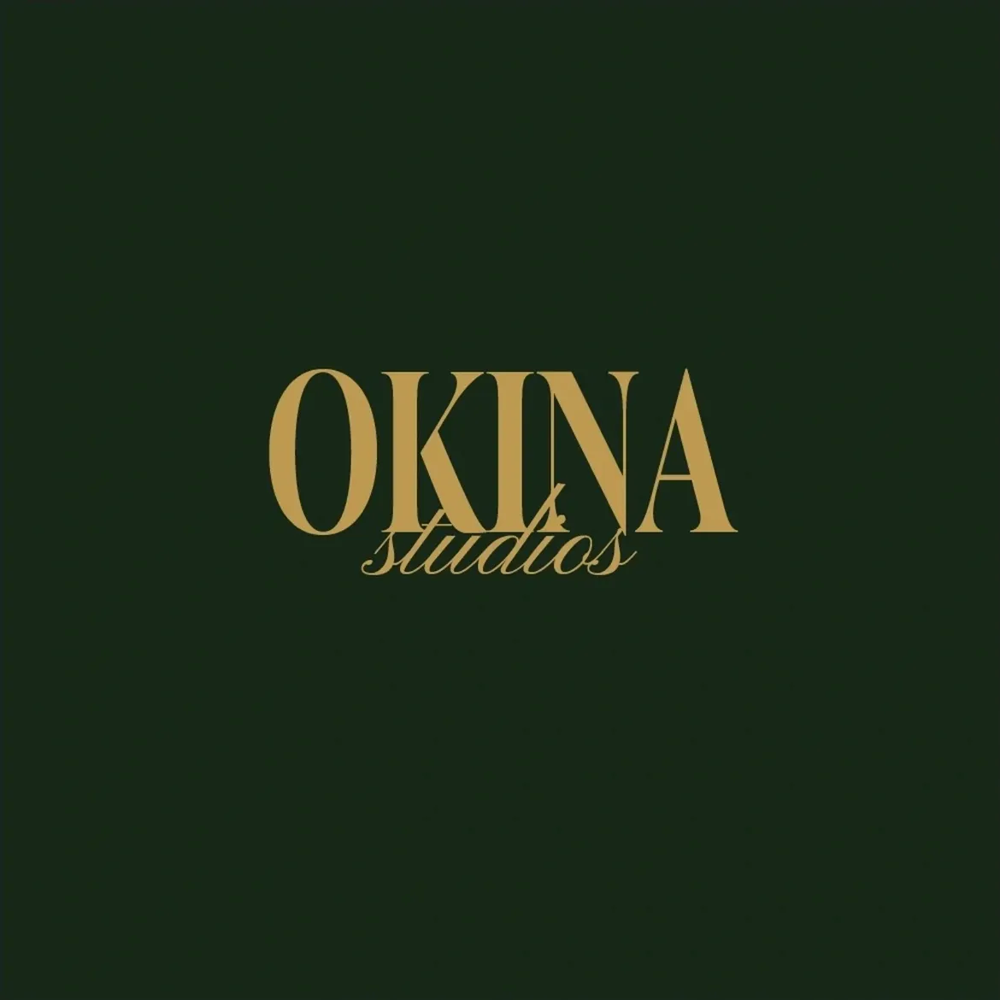

OKINA STUDIOS
Soooo... this is the agency I co-founded!
In our first month, we landed 4 clients, including Urban Ladder, and teamed up with creators who helped bring the brand to life. For the launch, I created a teaser campaign that slowly revealed the brand and built that lovely anticipation. Every post was designed to build curiosity, establish our cinematic identity, and make people wonder, "Wait... what is Okina?"
Yeah... prettty cool!